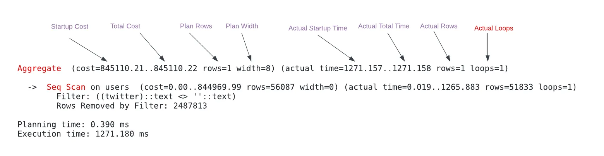
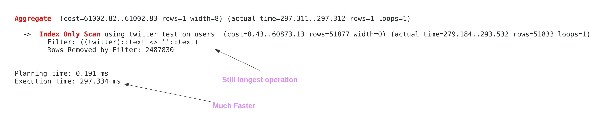
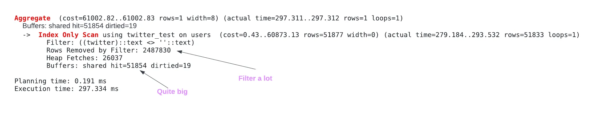
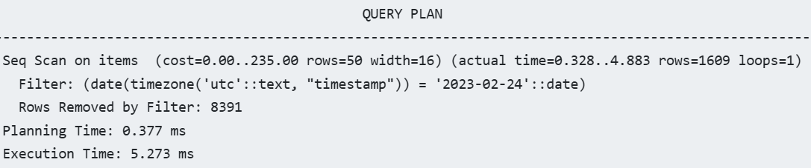
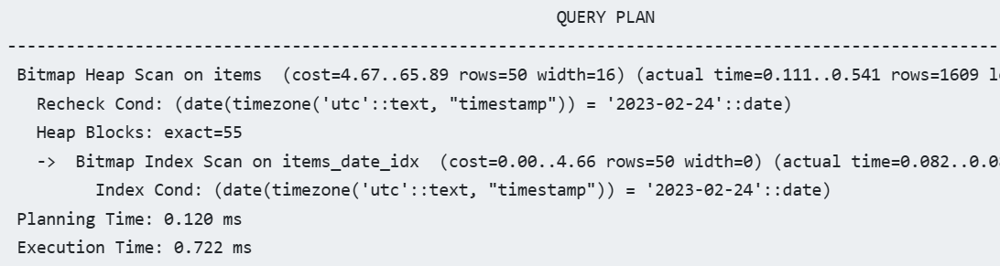

Postgres
Misc
- Notes from
- Course: linkedin.learning.postgresql.client.applications
- Course: Linux.Academy.PostgreSQL.Administration.Deep.Dive
- Postgres is eating the database world
- Packages
- Resources
- Docs - All on one page so you can just ctrl + f
- Exploring Enterprise Databases with R: A Tidyverse Approach
- basics, docker, security, dplyr, views, metadata
- PostgreSQL is Enough - Links to various applications/extensions resources
- Tools
- Pigsty
- Open Source RDS alternative
- Aims to harness the collective power of PostgreSQL ecosystem extensions and democratize access to high-quality database services.
- Neon
- Serverless, Fault-Tolerant, Branchable Postgres
- RegreSQL (Intro)
- You write (or generate - continue reading) your SQL queries, provide input data, and RegreSQL verifies that future changes don’t break those expectations.
- Also tracks performance baselines, detects common query plan regressions (like sequential scans), and gives you a framework for systematic experimentation with the schema changes and query change management.
- Pigsty
- When you don’t use the open-source distribution of PostgreSQL, and instead, utilize PostgreSQL as a managed service by subscribing to a provider like Amazon RDS, you are limited to that service provider’s list of supported extensions. These services usually offer all the core PostgreSQL capabilities, but may not support an extension you might need in the future.
- Everything is case sensitive, so use lowercase for db and table names
- Check postgres sql version -
psql --versionor -V - See flag options -
psql --help - If there’s a “#” in the prompt after logging into a db, then that signifies you are a super-user
- Meta commands (i.e. commands once you’re logged into the db)
\du- list roles (aka users + permissions)\c <different db>- switches databases\password <user name>- assign a password to a user (prompt will ask for the password twice)- Can also use
ALTER ROLEfor this but the password will then be in the log
- Can also use
- Unlogged Table - Data written to an unlogged table will not be logged to the write-ahead-log (WAL), making it ideal for intermediate tables and considerably faster. Note that unlogged tables will not be restored in case of a crash, and will not be replicated.
Extensions
- Apache AGE
- Website, Docs
- The goal of the project is to create single storage that can handle both relational and graph model data so that users can use standard ANSI SQL along with openCypher, the Graph query language.
- Users can read and write graph data in nodes and edges. They can also use various algorithms such as variable length and edge traversal when analyzing data.
- pgai
- Repo, Intro
- Simplifies the process of building search, and Retrieval Augmented Generation (RAG) AI applications with PostgreSQL.
- Features
- Create embeddings for your data.
- Retrieve LLM chat completions from models like OpenAI GPT4o.
- Reason over your data and facilitate use cases like classification, summarization, and data enrichment on your existing relational data in PostgreSQL.
- pg_analytics
- Intro, Repo
- Arrow and Datafusion integrated with Postgres
- Delta Lake tables behave like regular Postgres tables but use a column-oriented layout via Apache Arrow and utilize Apache DataFusion, a query engine optimized for column-oriented data
- Data is persisted to disk with Parquet
- The delta-rs library is a Rust-based implementation of Delta Lake. This library adds ACID transactions, updates and deletes, and file compaction to Parquet storage. It also supports querying over data lakes like S3, which introduces the future possibility connecting Postgres tables to cloud data lakes.
- pg_bm25
- Intro, Repo
- Rust-based extension that significantly improves Postgres’ full text search capabilities
- Built to be an Elasticsearch inside of a postgres db
- Performant on large tables, adds support for operations like fuzzy search, relevance tuning, or BM25 relevance scoring (same algo as Elasticsearch), real-time search — new data is immediately searchable without manual reindexing
- Query times over 1M rows are 20x faster compared to tsquery and ts_ran (built-in search and sort)
- Can be combined with PGVector for semantic fuzzy search
- Citus
- Website
- Distributed Postgres
- Transforms a standalone cluster into a horizontally partitioned distributed database cluster.
- Scales Postgres by distributing data & queries. You can start with a single Citus node, then add nodes & rebalance shards when you need to grow.
- Can combine with PostGIS for a distributed geospatial database, PGVector for a distributed vector database, pg_bm25 for a distributed full-text search database, etc.
- yugabytedb is also an option for distributed postgres
- pg_duckdb
- Repo, Intro
- Official Postgres extension for DuckDB
- Developed in collaboration with our partners, Hydra and MotherDuck
- Embeds DuckDB’s columnar-vectorized analytics engine and features into Postgres
SELECTqueries executed by the DuckDB engine can directly read Postgres tables- Read parquet and CSV files from object storage (AWS S3, Cloudflare R2, or Google GCS)
- Enable the DuckDB Iceberg extension and read Iceberg files.
- Write a query — or an entire table — to parquet in object storage.
- Read and write to Parquet format in a single query
- Query and
JOINdata in object storage with Postgres tables, views, and materialized views. - Create indexes on Postgres tables to accelerate your DuckDB queries
- Install DuckDB extensions
- Toggle DuckDB execution on/off with a setting
- pg_flo
- Repo, Site
- Sync and Tranformation
- Leverages PostgreSQL’s logical replication system to capture and stream data changes. It uses NATS as a message broker to decouple reading from the WAL through the replicator and worker processes, providing flexibility and scalability. Transformations and filtrations are applied before the data reaches the destination.
- Use Cases
- Continuously sync production data to staging, leveraging powerful transformation rules to maintain data privacy and security practices.
- Sync and transform data to separate databases for archiving, auditing and analytics purposes.
- PGLite
- Website
- Embeddable Postgres (e.g. for things like apps)
- Run a full Postgres database locally in WASM with reactivity and live sync.
- pg_mooncake
- Repo, Site
- Adds native columnstore tables with DuckDB execution for 1000x faster analytics.
- Columnstore tables are stored as Iceberg or Delta Lake tables (parquet files + metadata) in object storage. Differs from pg_duckdb, because these tables support transactional and batch inserts, updates, and deletes, as well as joins with regular PostgreSQL tables.
- Available on Neon Postgres.
- pg_parquet
- plprql
- Repo
- Enables you to run PRQL queries. PRQL has a syntax that is similar to {dplyr}
- Built in Rust so you have to have pgrx installed. Repo has directions.
- pgroll
- Repo
- An open-source schema migration tool for Postgres, built to enable zero downtime, reversible schema migrations using the expand/contract pattern
- Creates virtual schemas based on PostgreSQL views on top of the physical tables. This allows you to make changes to your database without impacting the application.
- pgrx
- Repo
- Framework for developing PostgreSQL extensions in Rust
- To install extensions built in Rust, you need to have this extension installed
- pg_sparse
- Intro, Repo
- Enables efficient storage and retrieval of sparse vectors using HNSW
- SPLADE outputs sparse vectors with over 30,000 entries. Sparse vectors can detect the presence of exact keywords while also capturing semantic similarity between terms.
- Fork of pgvector with modifications
- Compatible alongside both pg_bm25 and pgvector
- pgstream
- pg_timeseries
- Intro, Repo
- An alternative to TimescaleDB. That license restricts use of features such as compression, incremental materialized views, and bottomless storage but that might because the company (tembo) that open sourced this extension has their own stack, cloud, etc.
- Features such as native partitioning, variety of indexes, materialized views, and window / analytics functions
- You can compress tables if the table data is older than a certain time period (e.g. 90 days)
- pg_tracing
- Repo
- Generates server-side spans for distributed tracing
- pgvector
- Repo
- Also see Databases, Vector Databases for alternatives and comparisons
- Enables efficient storage and retrieval of dense vectors using HNSW
- OpenAI’s text-embedding-ada-002 model outputs dense vectors with 1536 entries
- Exact and Approximate Nearest Neighbor search
- L2 distance, Inner Product, and Cosine Distance
- Supported inside AWS RDS
- pg_vectorize
- Repo
- Workflows for both vector search and RAG
- Integrations with OpenAI’s embeddings and chat-completion endpoints and a self-hosted container for running Hugging Face Sentence-Transformers
- Automated creation of Postgres triggers to keep your embeddings up to date
- High level API - one function to initialize embeddings transformations, and another function to search
- pgvectorscale
- Repo, Intro
- A complement to pgvector for high performance, cost efficient vector search on large workloads.
- Features
- A new index type called StreamingDiskANN, inspired by the DiskANN algorithm, based on research from Microsoft.
- Statistical Binary Quantization: developed by Timescale researchers, This compression method improves on standard Binary Quantization.
Docker
- Steps
- Start docker desktop
- Start powershell
docker run --name pg_database -p 5432:5432 -e POSTGRES_PASSWORD=ericb2022 -d postgres:latest- 1st 5432 is local computer port
- 2nd 5432 is the required postgres image port
- -e is for defining an environment variable; here its the db password that I set to ericb2022
- -d
- Runs the container in the background
- Allows you to run commands in the same terminal window that you used the container run command in
- “postgres:latest” is the name of the image to build the container from
- Close powershell
- In docker desktop, the “pg_database” container should be running
- Connect to the db
- Steps
- psql should be in your list of path environment variables
- Right-click Start >> System >> advanced settings (right panel) >> environment variables >> highlight path >> edit
- “C:\Program Files\PostgreSQL\14\bin”
- ** Note the “14” in the path which is the current version. Therefore, when postgres is updated, this path will have to be updated **
psql --host localhost --port 5432 --dbname postgres --username postgres- Note these are all default values, so this is equivalent to
psql -U postgres - –host (-h) is the ip address or computer name that you want to connect to
- localhost is for the docker container that’s running
- 5432 is the default –port (-p) for a postgres container
- –dbname (-d) is the name of the database on the server
- “postgres” is a db that ships with postgres
- –username (-U) is a username that has permission to access the db
- “postgres” is the default super-user name
- Note these are all default values, so this is equivalent to
- A prompt will then ask you for that username’s password
- The container above has the password ericb2022
- This didn’t work for me, needed to use my postgres password that I set-up when I installed postgres and pgAdmin.
- My local postgres server and the container are listening on the same port, so maybe if I changed the first port number to something else, it would connect to the container.
- The container above has the password ericb2022
- To exit db,
\q
- psql should be in your list of path environment variables
- Steps
- Create a db
- Steps
createdb -h localhost -p 5432 -U postgres -O eric two_trees- -U is the user account used to create the db
- -O is used to assign ownership to another user account
- “role” (i.e. user account) must already exist
- “two_trees” is the name of the new db
- You will be prompted for user’s password
- List of dbs on the server
psql -h localhost -p 5432 -U postgres -l- -l lists all dbs on server
- You will be prompted for user’s password
- Steps
- Run a sql script
psql -d acweb -f test.sql- -d is for the database name (e.g. acweb)
- -f is for running a file (e.g. test.sql)
- Add users
Create user/role (once inside db)
CREATE USER <user name1>; CREATE ROLE <user name2>; ALTER ROLE <user name2> LOGINCREATE USERwill give the user login attribute/permission whileCREATE ROLEwill notALTER ROLEgives the user attributes/permissions (e.g. login permission)
- Create user/role (at the CLI) -
createuser <user name>
pgAdmin
- Create a server
- Right-click on servers >> create >> server
- General tab >> enter name
- Connection tab
- Host name/address: computer name or ip address where the server is running
- local: localhost or 127.0.0.1
- Port: default = 5432
- Maintenance database: db you want to connect to
- If you haven’t created it yet, just use default “postgres” which autmatically created during installation
- username/password
- u: default is postgres
- p: installation password
- Tick Save password
- Host name/address: computer name or ip address where the server is running
- Click Save
- Right-click on servers >> create >> server
- Create a db
- Right-click databases >> create >> databases >> enter name (lowercase) and click save
- Create a table
- Via gui
- Click db name >> schema >> public >> right-click tables >> create >> tables
- General tab
- Enter the table name (lower case)
- Columns tab
- Enter name, data type, whether there should be a “Not Null” constraint, and whether it’s a primary key
- Add additional column with “+” icon in upper right
- If you’re going to fill the table with a .csv file, make sure the column names match
- Click save
- Table will be located at db name >> schema >> public >> tables
- Via sql
- Open query tool
- Right-click
or Schemas or Tables >> query tool - Click Tools menu dropdown (navbar) >> query tool
- Right-click
- Run CREATE TABLE statement
- If you don’t include the schema as part of the table name, pgadmin automatically places it into the “public” schema directory (e.g. public.table_name)
- Open query tool
- Via gui
- Import csv into an empty table
- Make sure the column names match
- Right-click table name >> import/export
- Options tab
- Make sure import is selected
- Select the file
- If you have column names in your csv, select Yes for Header
- Select “,” for the Delimiter
- Columns tab
- Check to make sure all the column names are there
- Click OK
- Query Table
- Right-click table >> query editor
- Query editor tab
- Type query >> click ▶ to run query
AWS RDS
- Misc
- Notes from Create an RDS Postgres Instance and connect with pgAdmin
- List of extensions supported by AWS RDS
- Amazon Aurora Limitless is a sharding solution for Postgres for AWS users. However, you should assess the TCO (Total Cost of Ownership) carefully, as many who have evaluated this new service suggest that “Limitless” might also imply limitless costs.
- Steps
- Search AWS services for “RDS” (top left navbar)
- Create Database
- Click “Create Database”
- Create Database
- Choose Standard create or Easy Create
- Easy Create - uses “best practices” settings
- Select postgres
- Also available: Amazon Aurora, MySQL, MariaDB, Oracle, Microsoft SQL Server
- Templates
- Production
- Multi-AZ Deployment - Multiple Availability Zones
- Provisioned IOPS Storage - Increased output
- Dev/Test
- Rree tier
- 750 hrs of Amazon RDS in a Single-AZ db.t2.micro Instance.
- 20 GB of General Purpose Storage (SSD).
- 20 GB for automated backup storage and any user-initiated DB Snapshots.
- RDS pricing page
- Production
- Settings
- DB Instance Identifier - enter name
- Set master username, master username password
- DB Instance
- db.t3.micro or db.t4g.micro for free tier
- dev/test, production has many other options
- db.t3.micro or db.t4g.micro for free tier
- Storage
- Defaults: SSD with 20GB
- Autoscaling can up the storage capacity to a default 1000GB
- Choose Standard create or Easy Create
Python
- {{psycopg2}}
Misc
- Notes from Fastest Way to Load Data Into PostgreSQL Using Python
- tl;dr
- Large Data: use
copy_to - Medium to Small Data:
- Time and memory isn’t an issue: Use
extract_valuesor maybecopy_toif you don’t have JSON.
- Time and memory isn’t an issue: Use
- Large Data: use
Connect to db
import psycopg2 connection = psycopg2.connect( host="localhost", database="testload", user="haki", password=None, ) connection.autocommit = TrueCreate a table
def create_staging_table(cursor) -> None: cursor.execute(""" DROP TABLE IF EXISTS staging_beers; CREATE UNLOGGED TABLE staging_beers ( id INTEGER, name TEXT, tagline TEXT, first_brewed DATE, description TEXT, image_url TEXT, abv DECIMAL, ibu DECIMAL, target_fg DECIMAL, target_og DECIMAL, ebc DECIMAL, srm DECIMAL, ph DECIMAL, attenuation_level DECIMAL, brewers_tips TEXT, contributed_by TEXT, volume INTEGER ); """) with connection.cursor() as cursor: create_staging_table(cursor)- The function receives a cursor and creates a unlogged table called staging_beers.
Insert many rows at once
Notes from Fastest Way to Load Data Into PostgreSQL Using Python
The best way to load data into a database is using the
copycommand (last method in this section). The issue here is thatcopyneeds a .csv file and not json.- This might be an issue just because of psycopg2 library doesn’t support json or that there is a postgres extension that isn’t supported by the library. This also might not be a problem in the future.
Data
beers = iter_beers_from_api() next(beers) {'id': 1, 'name': 'Buzz', 'tagline': 'A Real Bitter Experience.', 'first_brewed': '09/2007', 'description': 'A light, crisp and bitter IPA brewed...', 'image_url': 'https://images.punkapi.com/v2/keg.png', 'abv': 4.5, 'ibu': 60, 'target_fg': 1010, ... } next(beers) {'id': 2, 'name': 'Trashy Blonde', 'tagline': "You Know You Shouldn't", 'first_brewed': '04/2008', 'description': 'A titillating, ...', 'image_url': 'https://images.punkapi.com/v2/2.png', 'abv': 4.1, 'ibu': 41.5, ... }Data is from beers api
iter_beers_from_apiis a udf that takes the json from the api and creates a generator object that iterates through each beer.
Insert data in db using
execute_values(low memory usage and still pretty fast)def insert_execute_values_iterator( connection, beers: Iterator[Dict[str, Any]], page_size: int = 100, ) -> None: with connection.cursor() as cursor: create_staging_table(cursor) psycopg2.extras.execute_values(cursor, """ INSERT INTO staging_beers VALUES %s; """, (( beer['id'], beer['name'], beer['tagline'], parse_first_brewed(beer['first_brewed']), beer['description'], beer['image_url'], beer['abv'], beer['ibu'], beer['target_fg'], beer['target_og'], beer['ebc'], beer['srm'], beer['ph'], beer['attenuation_level'], beer['brewers_tips'], beer['contributed_by'], beer['volume']['value'], ) for beer in beers), page_size=page_size) insert_execute_values_iterator(page_size=1000)parse_first_brewedis a udf that transforms a date string to datetime type.beer[‘volume’][‘value’]: Data is in json and the value for volume is subsetted from the nested field.
Benchmark: At page_size = 1000, 1.468s, 0.0MB of RAM used
The generator
((bear['id'], … , bear['volume']['value'], for beer in beers)keeps data from being stored in memory during transformationpage_size: maximum number of arglist items to include in every statement. If there are more items the function will execute more than one statement.
- Here arglist is the data in the form of generator
Insert data in db using
copy_from(Fast but memory intensive)import io def clean_csv_value(value: Optional[Any]) -> str: if value is None: return r'\N' return str(value).replace('\n', '\\n') def copy_stringio(connection, beers: Iterator[Dict[str, Any]]) -> None: with connection.cursor() as cursor: create_staging_table(cursor) csv_file_like_object = io.StringIO() for beer in beers: csv_file_like_object.write('|'.join(map(clean_csv_value, ( beer['id'], beer['name'], beer['tagline'], parse_first_brewed(beer['first_brewed']), beer['description'], beer['image_url'], beer['abv'], beer['ibu'], beer['target_fg'], beer['target_og'], beer['ebc'], beer['srm'], beer['ph'], beer['attenuation_level'], beer['contributed_by'], beer['brewers_tips'], beer['volume']['value'], ))) + '\n') csv_file_like_object.seek(0) cursor.copy_from(csv_file_like_object, 'staging_beers', sep='|')clean_csv_value: Transforms a single valueEscape new lines: some of the text fields include newlines, so we escape
\n->\\n.Empty values are transformed to
\N: The string"\N"is the default string used by PostgreSQL to indicate NULL in COPY (this can be changed using theNULLoption).
csv_file_like_object: Generate a file like object usingio.StringIO. AStringIOobject contains a string which can be used like a file. In our case, a CSV file.csv_file_like_object.write: Transform a beer to a CSV rowTransform the data: transformations on
first_brewedandvolumeare performed here.Pick a delimiter: Some of the fields in the dataset contain free text with commas. To prevent conflicts, we pick “|” as the delimiter (another option is to use
QUOTE).
Insert data (streaming) in db using
copy_from(Fastest and low memory but complicated, at least with json)Buffering function
from typing import Iterator, Optional import io class StringIteratorIO(io.TextIOBase): def __init__(self, iter: Iterator[str]): self._iter = iter self._buff = '' def readable(self) -> bool: return True def _read1(self, n: Optional[int] = None) -> str: while not self._buff: try: self._buff = next(self._iter) except StopIteration: break ret = self._buff[:n] self._buff = self._buff[len(ret):] return ret def read(self, n: Optional[int] = None) -> str: line = [] if n is None or n < 0: while True: m = self._read1() if not m: break line.append(m) else: while n > 0: m = self._read1(n) if not m: break n -= len(m) line.append(m) return ''.join(line)- The regular
io.StringIOcreates a file-like object but is memory-heavy. This function creates buffer that will feed each line of the file into a buffer, stream it tocopy, empty the buffer, and load the next line.
- The regular
Copy to db
def clean_csv_value(value: Optional[Any]) -> str: if value is None: return r'\N' return str(value).replace('\n', '\\n') def copy_string_iterator(connection, beers: Iterator[Dict[str, Any]]) -> None: with connection.cursor() as cursor: create_staging_table(cursor) beers_string_iterator = StringIteratorIO(( '|'.join(map(clean_csv_value, ( beer['id'], beer['name'], beer['tagline'], parse_first_brewed(beer['first_brewed']).isoformat(), beer['description'], beer['image_url'], beer['abv'], beer['ibu'], beer['target_fg'], beer['target_og'], beer['ebc'], beer['srm'], beer['ph'], beer['attenuation_level'], beer['brewers_tips'], beer['contributed_by'], beer['volume']['value'], ))) + '\n' for beer in beers )) cursor.copy_from(beers_string_iterator, 'staging_beers', sep='|')- Similar to other code above
Distributed Architectures
- Misc
- Notes from An Overview of Distributed PostgreSQL Architectures
- Features to achieve single node availability, durability, and performance - Replication - Place copies of data on different machines - Distribution - Place partitions of data on different machines - Decentralization - Place different DBMS activities on different machines
- If transactions take on average 20ms, then a single (interactive) session can only do 50 transactions per second. You then need a lot of concurrent sessions to actually achieve high throughput. Having many sessions is not always practical from the application point-of-view, and each session uses significant resources like memory on the database server. Most PostgreSQL set ups limit the maximum number of sessions in the hundreds or low thousands, which puts a hard limit on achievable transaction throughput when network latency is involved.
- Network-Attached Block Storage (e.g. EBS)

- Common technique in cloud-based architectures
- Database server typically runs in a virtual machine in a Hypervisor, which exposes a block device to the VM. Any reads and writes to the block device will result in network calls to a block storage API. The block storage service internally replicates the writes to 2-3 storage nodes.
- Pros
- Higher durability (replication)
- Higher uptime (replace VM, reattach)
- Fast backups and replica creation (snapshots)
- Disk is resizable
- Cons
- Higher disk latency (~20μs -> ~1000μs)
- Lower IOPS (~1M -> ~10k IOPS)
- Crash recovery on restart takes time
- Cost can be high
- Guideline: The durability and availability benefits of network-attached storage usually outweigh the performance downsides, but it’s worth keeping in mind that PostgreSQL can be much faster.
- Read Replicas

- The most common way of using a replica is to set it up as a hot standby that takes over when the primary fails in a high availability set up.
- Helps you scale read throughput when reads are CPU or I/O bottlenecked by load balancing queries across replicas, which achieves linear scalability of reads and also offloads the primary, which speeds up writes!
- The primary usually does not wait for replication when committing a write, which means read replicas are always slightly behind. That can become an issue when your application does a read that, from the user’s perspective, depends on a write that happened earlier.
- For example, a user clicks “Add to cart”, which adds the item to the shopping cart and immediately sends the user to the shopping cart page. If reading the shopping cart contents happens on the read replica, the shopping cart might then appear empty. Hence, you need to be very careful about which reads use a read replica.
- When load balancing between different nodes, clients might repeatedly get connected to different replica and see a different state of the database
- Powerful tool for scaling reads, but you should consider whether your workload is really appropriate for it.
- Pros
- Read throughput scales linearly
- Low latency stale reads if read replica is closer than primary
- Lower load on primary
- Cons
- Eventual read-your-writes consistency
- No monotonic read consistency
- Poor cache usage
- Guideline: Consider using read replicas when you need >100k reads/sec or observe a CPU bottleneck due to reads, best avoided for dependent transactions and large working sets.
- DBMS-Optimized Cloud Storage

- Where DBMS is Database Management Software. (e.g. Aurora)
- PostgreSQL is not optimized for this architecture
- While the theory behind DBMS-optimized storage is sound. In practice, the performance benefits are often not very pronounced (and can be negative), and the cost can be much higher than regular network-attached block storage. It does offer a greater degree of flexibility to the cloud service provider, for instance in terms of attach/detach times, because storage is controlled in the data plane rather than the hypervisor.
- Pros
- Potential performance benefits by avoiding page writes from primary
- Replicas can reuse storage, incl. hot standby
- Can do faster reattach, branching than network-attached storage
- Cons
- Write latency is high by default
- High cost / pricing
- PostgreSQL is not designed for it, not OSS
- Guideline: Can be beneficial for complex workloads, but important to measure whether price-performance under load is actually better than using a bigger machine.
- Active-Active (e.g. BDR)

- Any node can locally accept writes without coordination with other nodes.
- It is typically used with replicas in multiple sites, each of which will then see low read and write latency, and can survive failure of other sites.
- Active-active systems do not have a linear history, even at the row level, which makes them very hard to program against.
- Pros
- Very high read and write availability
- Low read and write latency
- Read throughput scales linearly
- Cons
- Eventual read-your-writes consistency
- No monotonic read consistency
- No linear history (updates might conflict after commit)
- Guideline: Consider only for very simple workloads (e.g. queues) and only if you really need the benefits.
- Transparent Sharding (e.g. Citus)

- Tables distributed and/or replicated across multiple primary nodes using a “shard key .”
- Each node shows the distributed tables as if they were regular PostgreSQL tables and queries
- Data are located in “shards” which are regular PostgreSQL tables. Joins and foreign keys that include the shard key can be performed locally.
- Scaling out transactional workloads is most effective when queries have a filter on the shard key, such that they can be routed to a single shard group (e.g. single tenant in a multi-tenant app) or compute-heavy analytical queries that can be parallelized across the shards (e.g. time series / IoT).
- When loading data, use COPY, instead of INSERT, to avoid waiting for every row.
- Pros
- Scale throughput for reads & writes (CPU & IOPS)
- Scale memory for large working sets
- Parallelize analytical queries, batch operations
- Cons
- High read and write latency
- Data model decisions have high impact on performance
- Snapshot isolation concessions
- Guideline: Use for multi-tenant apps, otherwise use for large working set (>100GB) or compute heavy queries.
- Tables distributed and/or replicated across multiple primary nodes using a “shard key .”
- Distributed Key-Value Stores With SQL (e.g. Yugabyte)

- A bunch of complicated stuff I don’t understand 😅
- Tables are stored in the key-value store, with the key being a combination of the table ID and the primary key.
- Better to use PostgresSQL without this architecture.
- Pros
- Good read and write availability (shard-level failover)
- Single table, single key operations scale well
- No additional data modeling steps or snapshot isolation concessions
- Cons
- Many internal operations incur high latency
- No local joins in current implementations
- Not actually PostgreSQL, and less mature and optimized
- Guideline: Just use PostgreSQL. For simple applications, the availability and scalability benefits can be useful.
Performance Tuning
- Misc
- For routine queries/operations, the main performance bottleneck is frequently the lack of proper indexing on the queried data
- Basic query optimization options
- Pick the most efficient scan method.
- Pick the most efficient join method.
- Picking the most efficient join order.
- Filters should be placed as close to the top of the query as possible.
- Reduce disk IO operations when needed
- Sometimes even adding the correct index, (correctly) not using a function on that index, etc., the query will still be executed using a sequential scan.
- One possible reason is that the un-indexed query had been used for so long that the internal statistics indicated that a sequential scan should be used even with the new index present.
- Solutions
As a temporary measure in order to confirm that you structured the index and query correctly, you can turn off sequential scan.
SET enable_seqscan = off;The documentation suggests running
ANALYZEmanually with an increased default_statistics_target value or by increasing the amount of collected statistics.
- The planner’s choice depends on table statistics, data distribution, costs, and internal heuristics. On some runs, it might choose a plan that materializes a subquery. On other runs, perhaps due to updated statistics or slight changes in data, it might switch to the semi-join plan, causing the unexpected behavior. This makes such issues notoriously hard to reproduce consistently.
- pg_stat_statements
An extension that comes as part of PostgreSQL, but needs to be activated
Notes from PostgreSQL: Detecting Slow Queries Quickly
Activate
Open postgres’ config file,
postgresql.confSet shared_preload_libraries = ‘pg_stat_statements’ in the file and save.
Restart PostgreSQL
Deploy a View
test=# CREATE EXTENSION pg_stat_statements; CREATE EXTENSION
Example: Measuring Runtime of Queries
test=# SELECT substring(query, 1, 40) AS query, calls, round(total_exec_time::numeric, 2) AS total_time, round(mean_exec_time::numeric, 2) AS mean_time, round((100 * total_exec_time / sum(total_exec_time) OVER ())::numeric, 2) AS percentage FROM pg_stat_statements ORDER BY total_exec_time DESC LIMIT 10; query | calls | total_time | mean_time | percentage ------------------------------------------+---------+------------+-----------+------------ SELECT * FROM t_group AS a, t_product A | 1378242 | 128913.80 | 0.09 | 41.81 SELECT * FROM t_group AS a, t_product A | 900898 | 122081.85 | 0.14 | 39.59 SELECT relid AS stat_rel, (y).*, n_tup_i | 67 | 14526.71 | 216.82 | 4.71 SELECT $1 | 6146457 | 5259.13 | 0.00 | 1.71 SELECT * FROM t_group AS a, t_product A | 1135914 | 4960.74 | 0.00 | 1.61 /*pga4dash*/ +| 5289 | 4369.62 | 0.83 | 1.42 SELECT $1 AS chart_name, pg | | | | SELECT attrelid::regclass::text, count(* | 59 | 3834.34 | 64.99 | 1.24 SELECT * +| 245118 | 2040.52 | 0.01 | 0.66 FROM t_group AS a, t_product | | | | SELECT count(*) FROM pg_available_extens | 430 | 1383.77 | 3.22 | 0.45 SELECT query_id::jsonb->$1 AS qual_que | 59 | 1112.68 | 18.86 | 0.36 (10 rows)- Query shows how often a certain type of query has been executed and how many milliseconds of total execution time.
- The percentage of total runtime for each type of query has also been calculated for context.
substringwas used to make the query shorter for visibility.- When you pick a query or group of queries that you want to examine further, you’ll want to see the entire query string.
- Interpretation: the first two queries already need 80% of the total runtime.
Reset the content of the view
test=# SELECT pg_stat_statements_reset(); pg_stat_statements_reset -------------------------- (1 row)Example: Measuring I/O Time
Tests whether you have a I/O problem (i.e. read/write) or CPU problem
If the I/O time is a significant fraction of the total time (e.g. over 25-50%), it means disk performance is the bottleneck.
If the I/O time is not a significant portion, then adding more disks/IOPS (disk I/O operations per second) won’t help performance much.
Set tracking_io_timing to “on” for a database
1 test=# ALTER DATABASE test SET track_io_timing = on; 2 ALTER DATABASE- You can also turn it on in
postgresql.conffor the entire server
- You can also turn it on in
Inspect I/O Performance
test=# SELECT substring(query, 1, 30), total_exec_time, blk_read_time, blk_write_time FROM pg_stat_statements ORDER BY blk_read_time + blk_write_time DESC LIMIT 10; substring | total_exec_time | blk_read_time | blk_write_time --------------------------------+--------------------+--------------------+---------------- SELECT relid AS stat_rel, (y). | 14526.714420000004 | 9628.731881 | 0 SELECT attrelid::regclass::tex | 3834.3388820000005 | 1800.8131490000003 | 3.351335 FETCH 100 FROM c1 | 593.835973999964 | 143.45405699999006 | 0 SELECT query_id::jsonb->$1 A | 1112.681625 | 72.39612800000002 | 0 SELECT oid::regclass, relkin | 536.750372 | 57.409583000000005 | 0 INSERT INTO deep_thinker.t_adv | 90.34870800000012 | 46.811619999999984 | 0 INSERT INTO deep_thinker.t_thi | 72.65854599999999 | 43.621994 | 0 create database xyz | 97.532209 | 32.450164 | 0 WITH x AS (SELECT c.conrelid:: | 46.389295000000004 | 25.007044999999994 | 0 SELECT * FROM (SELECT relid::r | 511.72187599999995 | 23.482600000000005 | 0 (10 rows)- Compares the total_exec_time (total execution time) to the time used up for I/O.
An additional option is to look the temp_blks_read and temp_blks_written fields
- This is for analyzing temporary I/O which includes operations like sorting, hashing, etc.
- Note that increasing the work_mem parameter, which allows more data to be processed in memory, may not solve temporary I/O issues.
If I/O timing is a small portion of total_exec_time and temp_blks are low, it points to a CPU bottleneck. But if I/O timing is high compared to total_exec_time, the disk I/O is likely the bottleneck.
- EXPLAIN
- Notes from PostgreSQL: Query Optimization for Mere Humans
- Also see
- SQL >> Functions >> EXPLAIN, EXPLAIN ANALYZE
- Databases, Engineering >> Cost Optimizations >> EXPLAIN PLAN
- Resources
- Node Metrics
- Startup Cost: Arbitrary units that represent the estimated time to return the first row of the Aggregate (aggregated and includes previous operations).
- Total Cost: Arbitrary units that represent the estimated time to return all the rows of Aggregate node (aggregated).
- Plan Rows: The estimated number of produced rows of the Aggregate node. The estimated number of rows can be off depending on statistics.
- Plan Width: The estimated average size of rows of the Aggregate node is 8 bytes.
- Actual Startup Time: The time it took to return the first row in milliseconds of the Aggregate node (aggregated and includes previous operations).
- Actual Total Time: The time it took to return all the rows in ms of the Aggregate node (per-loop average; aggregated and include previous operations).
- Actual Rows: The actual number of produced rows of the Aggregate node (per-loop average).
- Actual Loops: The number of loops the same node executed. To get the total time and rows, the actual time and rows need to be multiplied by loops values.
- Be wary of loops, remember to multiply loops when you care about Actual Rows and Actual Total Time
- Example 1
Query

EXPLAIN ANALYZE SELECT COUNT(*) FROM users WHERE twitter != '';- The sequential scan filters out 2,487,813 rows
- Out of the total query execution time (1271.180 ms), the sequential scan took 1265.883 ms (actual time) which is the actual total time since there was only 1 loop.
Create an index
CREATE INDEX twitter_test ON users (twitter) EXPLAIN ANALYZE SELECT COUNT(*) FROM users WHERE twitter != '';- The sequential scan only takes 293.532 ms now
Check how many pages are read during the index scan
EXPLAIN (ANALYZE, BUFFERS) SELECT COUNT(*) FROM users WHERE twitter != ''- 51,854 pages are read all from the cache (400 MB).
- This wasn’t explained further, so research is needed to understand why this large and why it’s bad(?).
An additional optimization would be to change the index to a partial index, but it will cause writes to take longer and take additional storage, which is quite impactful on systems that scale vertically.
- Example 2: Applying a function to an indexed column (source)
Query
CREATE TABLE "items" ( "timestamp" TIMESTAMP WITH TIME ZONE, "value" FLOAT ); CREATE INDEX ON "items" ("timestamp"); EXPLAIN ANALYZE SELECT * FROM "items" WHERE DATE("timestamp" AT TIME ZONE 'utc') = '2023-02-24';- There’s an index on timestamp, yet a sequential scan is still used by the query planner.
- This is because the query executing a function on an indexed column
Solution: Apply index to function and column
CREATE INDEX ON "items" (DATE("timestamp" AT TIME ZONE 'utc')); EXPLAIN ANALYZE SELECT * FROM "items" WHERE DATE("timestamp" AT TIME ZONE 'utc') = '2023-02-24';- You could also filter a range of timestamps (that equals 1 day) instead of truncating the timestamp with a function, and that query will use the existing column index
{kind=link}
{kind=link}
{kind=link}
{kind=link}
{kind=link}
Updating/Upgrading
- Misc
- Notes from Why Does Everyone Run Ancient Postgres Versions?
- Tools
- pgversions.com - Helps you quickly identify the improvements you’re missing by running an older Postgres version
- Also has a “How to upgrade” section in the report that will point you toward the right docs for different providers.
- pg_upgrade - Upgrade a PostgreSQL server instance
- Internal data storage format rarely changes, but if a future major release ever changes the data storage format in a way that makes the old data format unreadable, pg_upgrade will not be usable for such upgrades
- pgversions.com - Helps you quickly identify the improvements you’re missing by running an older Postgres version
- It’s best to jump as many versions as you can when you do upgrade but if you wait for 5 or more versions there will be many compatibility issues and breaking changes ahead.
- Steps
- Assessment and Planning - Evaluate you database sizes and workloads (e.g a 4 TB database or multiple databases). Objectives like minimizing downtime and upgrading before end-of-life were set. Choose you target Postgres versions and craft detailed project timelines and risk assessments.
- Set-Up Replication - New database instances running the target Postgres versions get spun up and logical replication from the old to the new databases are established.
- Warp can be used for parallel processing to expedite the initial dump and restore
- Can create custom publications and subscriptions for incremental migration.
- Migrate Data Incrementally - Categorize tables based on size and update frequency.
- Small tables get added to replication and synchronized quickly.
- Large, append-only tables get separate publications with copy_data = false and then backfilled. Custom migration strategies are considered for large, frequently updated tables.
- Testing and Verification - Perform thorough testing on the new database versions.
- Compare row counts and sample data between old and new databases, run load tests to verify performance, and conduct multiple dry runs in staging environments.
- Application Changes - After testing, modify applications to support connections to both old and new databases. Implement mechanisms to switch traffic from the old to the new databases, such as using feature flags.
- Cutover Strategy - Schedule the cutover during low-traffic periods. The downtime could be only a brief pause or you may need to use a maintenance window aiming for about one hour.
- Post-Migration Tasks - Afterward, verify data integrity and application functionality,
- Optimize the new databases (e.g., reindexing, vacuuming), monitor performance in the following days, remove old replication setups, and decommission the old databases.
Back-Ups
- Tools
- pg_dump
- Notes from Why pg_dump Is Amazing
- Uses DDL commands to store tables as human-readable text and has COPY and INSERT command to reload tables back into a database
- Use Cases
- To back up and restore a single table, or a single object of some other type, like a function definition
- Use tar format (
pg_dump -Ft) or custom format (pg_dump -Fc) so pg_restore can pick out exactly the objects you want to restore and restore exactly those.
- Use tar format (
- Corrupted Database
- Example: A database table containing rows where the xmin of a tuple is less than the relation’s relfrozenxid but, sadly, the tuple is not frozen. (?)
- If discovered early enough, you will be able to fail over to an unaffected replica or restore from an uncorrupted backup.
- If not discovered early enough (for a long period the data will still readable), the system will remove old clog files that it things are no longer needed, and suddenly that data will become unreadable.
- Solution: You can restore from a physical backup where the data still was readable, and then use pg_dump to get the data out, and then reload it wherever you like.
- Example: A database table containing rows where the xmin of a tuple is less than the relation’s relfrozenxid but, sadly, the tuple is not frozen. (?)
- Recreate a database schema from one server on another server
- If you’re dumping the data and not just the schema, pg_dump will even arrange the dump so that the data restoration is as efficient as possible by postponing the creation of indexes until after the data load.
- At least partially (sans some edge cases) solves the dependency problem by first creating the table without subsidiary objects like foreign keys or constraints or indexes
- You might try to create a table and find that it errors because that table has a foreign key to some other table that doesn’t exist yet
- To back up and restore a single table, or a single object of some other type, like a function definition
- Issues
- Requires substantial amount of CPU resources especially for a large db
- The text copies are likely not compatible with different CPU types (i.e. integers and floating point number representations won’t be the same.
- Other types of dbs, warehouses, etc. likely won’t be able to read these text back-ups
- Might not be compatible with major postgres updates or large jumps between the old version and new version
- Reloading a dump can also fail if you use the older version of pg_dump when creating the dump
- -Fd flag with -j option parallelizes the operation